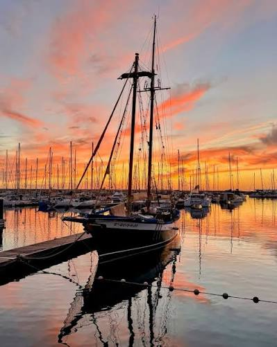

El sitio más bonito de Playa Blanca
En mi opinión, por lo que mas vale la pena visitarlo son las vistas, sobre todo si esperas a la puesta de sol, o incluso a la noche, siendo de los momentos más bonitos para verlo.
Es un puerto deportivo, en el que a parte de poder ver los barcos, está rodeado de tiendas y bares.
Este maravilloso sitio se encuentra en Playa Blanca, junto al hotel Barceló, de camino a las coloradas.
Calle: C/ El Berrugo 2, Yaiza
